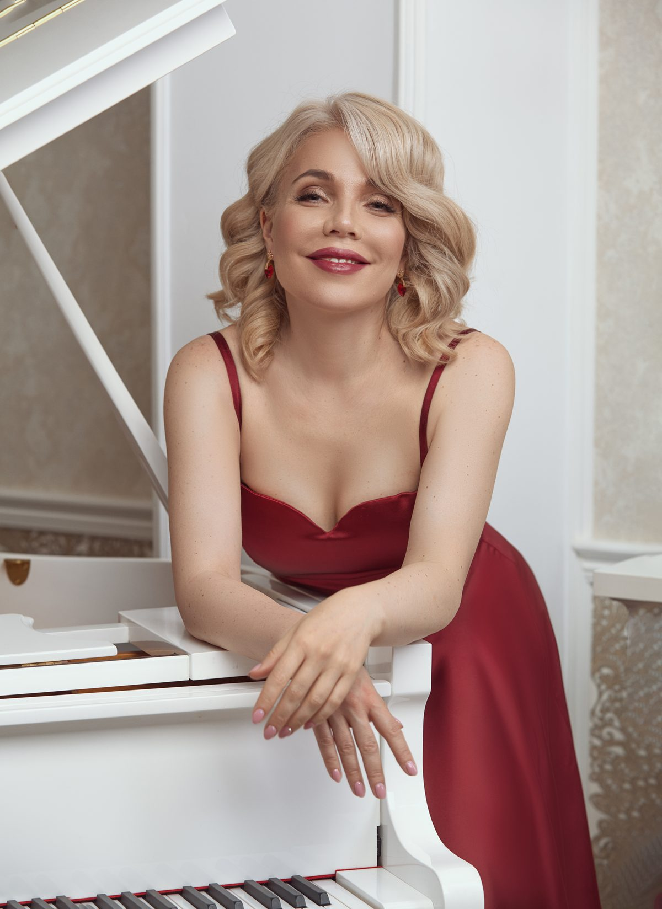

Concert pianist · Doctor of Musical Arts · University professor · International competition prizewinner (Paris · Rome) · Steinway Top Teacher
University-level piano training — from your very first note. The great Russian school, made simple.
I'm Dr. Maria "Masha" Pisarenko — a classical concert pianist, Doctor of Musical Arts, and university professor. I bring conservatory-level training to students everywhere, online — so beginners get a real foundation, taught warmly and step by step.
My story began in Siberia, where I was recognized as a child prodigy. I started piano at five, gave my first solo recital at seven, and appeared as a concerto soloist with symphony orchestras by eight. After top honors at the First International Tchaikovsky Youth Competition in Moscow, I was invited to study at one of the most elite schools in the world — the Central Music School of the Moscow Tchaikovsky Conservatory — the heart of the legendary Russian school of piano.
I went on to earn Bachelor's and Master's degrees in Piano Performance, Pedagogy & Collaborative Piano from the Gnesins Russian Academy of Music in Moscow, and later a Doctor of Musical Arts (D.M.A.) in Piano Performance from the University of Nevada, Las Vegas. I also hold a Ph.D. in Linguistics — which is part of why I'm at home teaching students across languages and countries.
As a concert pianist, I've performed on prestigious stages across Russia, Europe, Asia, and the United States — including the Royal Academy of Music (London), the Paris Conservatory, and the Moscow Tchaikovsky Conservatory — in solo recitals and as a concerto soloist with symphony orchestras.
Today I teach at the college and university level — and through Online Piano University, I teach you. My mission is simple: give you the real, college-level foundation — proper technique, reading, and musicianship — from the very first note, so you don't just press keys, you truly play.

I am a bearer of the golden Russian piano school — the tradition of Heinrich Neuhaus, Alexander Goldenweiser, Tatiana Nikolayeva and Maria Yudina — carried to me directly through my own teachers. My formative teacher at the Central Music School of the Moscow Tchaikovsky Conservatory was Manana Kandelaki — a pupil of the legendary Tatiana Nikolayeva, who brought her to teach at the school. During those same years I studied regularly with Ilya Klyachko, the renowned Moscow Conservatory professor and a pupil of Alexander Goldenweiser. Nikolayeva, too, was Goldenweiser's student — so my training descends to him along two independent lines. And Goldenweiser studied with Alexander Siloti, a pupil of Franz Liszt himself. A direct, documented teaching line: Liszt → Siloti → Goldenweiser → Klyachko & Nikolayeva → my teachers → me.
The first commandment of that golden generation, passed on to me in those lessons: musicians play with their ears first — you must hear it before you can play it. It is the heart of how I teach today.
At the Gnesins Russian Academy of Music I studied with Dr. Lina Bulatova, Dr. Vera Nossina and professor Yuri Ponizovkin — a pupil of the legendary Maria Yudina and a noted Rachmaninoff scholar. As a student at the Central Music School I played for Tatiana Nikolayeva herself: before important examinations and performances, my teacher — Nikolayeva's own pupil — arranged for me to take lessons with her. I've worked in lessons and masterclasses with legends of the school — Tatiana Nikolayeva, Eliso Virsaladze, Vera Gornostayeva, Sergei Dorensky, Lev Naumov, Vladimir Krainev — and consulted with faculty of The Juilliard School (Seymour Lipkin, Martin Canin, Matti Raekallio).
Grieg — Piano Concerto in A minor (live with orchestra)
Solo Piano Recital — Southern Utah University (live)
Chopin — Piano Sonata No. 2 in B-flat minor, Op. 35 (live)
“The Siberian-born artist has performed throughout Europe, and has won various competitions… a featured performer on Nevada Public Radio and a guest soloist with numerous orchestras.”
— Salt Lake Tribune
“A career that began with international acclaim at a young age… a mature, highly experienced performing artist… can render the sincere emotion and deep feelings of the composers.”
— Southern Utah University
It's never too late to play — start the right way, with no bad habits to un-learn.
✓ Thank you — check your inbox!
No spam — just piano. Unsubscribe anytime.
As an Amazon Associate I earn from qualifying purchases.
The book my free course follows, page by page.
View on Amazon →